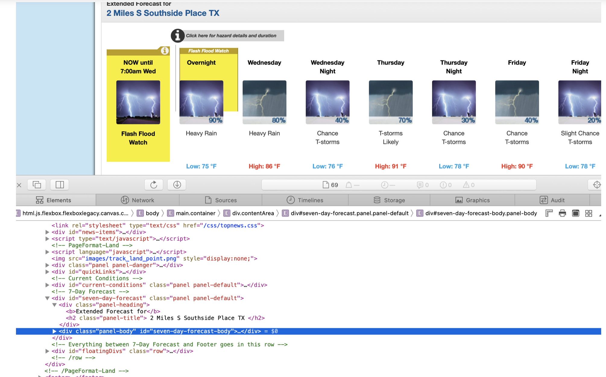

Web Scraping
In this project, we would review the web data extraction and see an example of its application on a weather website. Scraping of websites is a very useful activity especially to achieve recruiting or marketing tasks. All of the code can be found in the MBAN GitHub repository, feel free to download it and modify for your use case.
What is Web Scraping?
Web Scraping is a technique used to extract data from websites. A prerequisite to web scraping is knowing a little bit about HTML code to know where the data to be captured is located in the HTML code. If you have ever copy and pasted information from a website, you have performed the same function as any web scraper, only on a smaller, manual scale.
One way to scrape data is through Direct HTTP Requests. Websites are just a rendering of the HTML and CSS code that the web server returns as a result of a GET request of your browser. As a result, a simple script can send automatically HTTP requests and parse the answer, scraping the content. The python-requests package is used to make this request and enable data scraping.
Sometimes websites load the content asynchronously. This means that the information to be scraped may not be contained in the first HTTP response, but are loaded only as a consequence of a page scrolling or after the click of a button. To overcome this barrier a Web Browser Driver, Selenium Web Driver, is used. The Web Browser drivers let you run a real web browser enabling your Python script to emulate user behavior on the page.
Web scraping is a complicated process because all web pages do not follow the same format. Therefore, the code used to scrape data from a particular website can not be reapplied to another website. Therefore the python code has to customize the web-site’s HTML structure. However, websites can not be scraped multiple times as this can overload the server hosting the website, especially smaller websites.
Basic project
In this project, we will scrap a seven-day weather forecast for Houston from a static weather forecast website.
First of all, load the required packages. The requests package is used to make a request to the website and enable us to download web pages that are loaded into the python environment
import requests
from bs4 import BeautifulSoup
import pandas as pdRequest URL
#link of website to be scraped
url = "https://forecast.weather.gov/MapClick.php?lat=29.685271900000032&lon=-95.43426899999997#.XvL4ti-z1ZJ"
page = requests.get(url)
soup = BeautifulSoup(page.content, 'html.parser')The BeautifulSoup constructor parses raw HTML strings and produces an object that mirrors the HTML document’s structure. This makes web scraping very easy as you are able to find all the HTML tags. The output is the source code of the website.
For example, the code below extracts all the a tag in the web page. The a tag defines a hyperlink, which is used to link from one page to another.
#To find all the links in the web page (a-tags in the output)
print(soup.find_all('a')[0])
<a class="pull-left" href="http://www.noaa.gov" id="header-noaa"><img alt="National Oceanic and Atmospheric Administration" src="/css/images/header_noaa.png"/></a>
To identify the section that hosts tag the information that is needed, the source code of the web page can be checked by using the browser developer tools. The diagram below shows the web page and its corresponding source code. This is useful when identifying the tag id containing the information to be scraped from the web page.

The developer source code shows that the tag id is seven-day-forecast-container.
#component of the html code contacting weather information
week = soup.find(id='seven-day-forecast-body')
This shows every information contained in that tag id. To access all the items in this object week (weekdays), the information in the class tag “tombstone-container” is captured.
#Extracting information for the week
items = week.find_all(class_= "tombstone-container")
#extracting the first item in the items list - day 1
day1=items[0]
day1<div class="tombstone-container">
<p class="period-name">Overnight<br/><br/></p>
<p><img alt="Overnight: A 30 percent chance of showers and thunderstorms. Mostly cloudy, with a low around 78. Calm wind becoming east around 5 mph. " class="forecast-icon" src="newimages/medium/nscttsra30.png" title="Overnight: A 30 percent chance of showers and thunderstorms. Mostly cloudy, with a low around 78. Calm wind becoming east around 5 mph. "/></p><p class="short-desc">Chance<br/>T-storms</p><p class="temp temp-low">Low: 78 °F</p></div>Each item contains all coding and image relating to one day. The information in each item in the item list is broken into columns: Day, weather description, and temperature. A for-loop is used to extract all relevant weather information.
# extracting day from first item in list 'items'
print(day1.find(class_= "period-name").get_text()) #dayNOW until7:00am Wedprint(day1.find(class_= "short-desc").get_text()) #weatherFlash Flood Watchitems[1].find(class_= "temp").get_text()'Low: 75 °F'A for-loop is used to loop through the items list to get the column information for each day.
# For-loop to days for the week
period_name=[]
for day in items:
name=day.find(class_= "period-name").get_text()
period_name.append(name)
period_name #period['NOW until7:00am Wed',
'Overnight',
'Wednesday',
'WednesdayNight',
'Thursday',
'ThursdayNight',
'Friday',
'FridayNight',
'Saturday']# For-loop to extract weather description for each day
short_description = []
for day in items:
name=day.find(class_= "short-desc").get_text()
short_description.append(name)
short_description #period['Flash Flood Watch',
'Heavy Rain',
'Heavy Rain',
'T-storms thenChanceT-storms',
'T-stormsLikely',
'T-stormsLikely thenChanceT-storms',
'ChanceT-storms',
'ChanceT-storms',
'ChanceT-storms']# For-loop to extract temperature for each day
temperature = []
for day in items:
try:
name=day.find(class_= "temp").get_text()
except:
name = "NA"
temperature.append(name)
temperature['NA',
'Low: 75 °F',
'High: 86 °F',
'Low: 76 °F',
'High: 91 °F',
'Low: 78 °F',
'High: 90 °F',
'Low: 78 °F',
'High: 92 °F']The panda package is used to merge all output lists into a table.
#combine lists into data table
weather_table = pd.DataFrame({'Period':period_name,
'Short description':short_description,
'Temperature':temperature})
weather_table| Period | Short description | Temperature | |
|---|---|---|---|
| 0 | NOW until7:00am Wed | Flash Flood Watch | NA |
| 1 | Overnight | Heavy Rain | Low: 75 °F |
| 2 | Wednesday | Heavy Rain | High: 86 °F |
| 3 | WednesdayNight | T-storms thenChanceT-storms | Low: 76 °F |
| 4 | Thursday | T-stormsLikely | High: 91 °F |
| 5 | ThursdayNight | T-stormsLikely thenChanceT-storms | Low: 78 °F |
| 6 | Friday | ChanceT-storms | High: 90 °F |
| 7 | FridayNight | ChanceT-storms | Low: 78 °F |
| 8 | Saturday | ChanceT-storms | High: 92 °F |
This Table can be converted to a CSV file and used for data manipulation and analysis. This web scraping code can be used for different locations on the same website. Web scraping is an essential tool that almost every data analyst needs.
Conclusion
The incredible amount of data on the Internet is a rich resource for any field of research or personal interest. To effectively harvest that data, web scraping is a necessary skill. The Python library’s requests and Beautiful Soup are powerful tools for the job. However, there are some challenges in web Scraping. Each website is unique and will need a customized treatment to extract the relevant information.Additionally, websites constantly change therefore once the site’s structure has changed, the scraper might not be able to find the relevant information.
Web scraping can be used for social media analysis, product analysis, or financial analysis. An alternative way of accessing web data is requesting access through an API. An API (Application Programming Interface) is a set of procedures and communication protocols that provide access to the data of an application, operating system, or other services. OpenSource provides a valuable learning resource regarding web scraping using Python.
Created and maintained by the
Master of Business Analytics Community
Licensed under a
Creative Commons Attribution-NonCommercial-ShareAlike 4.0 International License.